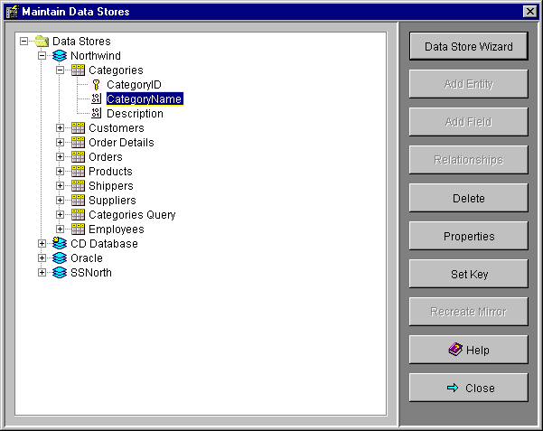
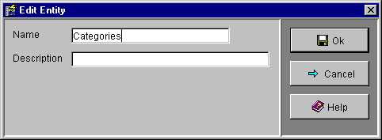
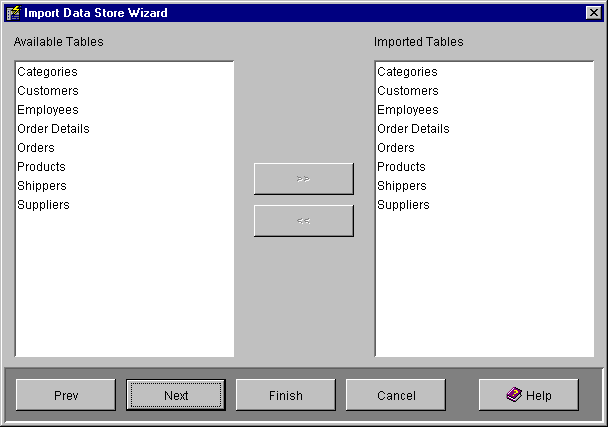

The Maintain Data Stores screen is used to create or modify data store
definitions that define which tables in your company's databases may
be accessed by MDN.
Each Data Store has a unique name. A data store may contain multiple entities
(tables), each of which may contain multiple fields. This hierarchy is displayed
in a tree.
You may set up relationships between the entities
in a data store to reflect the relationships within your database. These
relationships will be used to join the entities when they are used in a
view that includes fields from more than one
entity.
The Maintain Data Stores screen has the following buttons:
Data Store Wizard
Add Entity
Add Field
Relationships
Delete
Properties
Set Key
Recreate Mirror
The Data Store Wizard button displays the
Data Store Wizard which
guides you through the main steps of creating a Data Store. The wizard may be
used to create a new Data Store or modify an existing one.
While it is possible to manually add entities and fields to a data store this
requires exact knowledge of the correct names of those entities and fields in
your database. It is easier to use the Data Store Wizard
to add the entities and fields as it automatically imports all the required
names and allows you to simply select them from a list.
The Add Entity button displays the Edit Entity
screen to add a new entity to the currently selected Data Store.
This screen is also displayed to edit an entity when the Properties
button is pressed while an entity is selected.
Normally you will add entities using the Data Store Wizard.

Name is the name of the entity (table) in the source database. MDN will
produce errors when accessing this entity if the name is not correct and does
not match a table in the database.
Description is any additional text to describe the entity.
The Add Field button displays the Edit Field
screen to add a new field to the currently selected Entity.
This screen is also displayed to edit a field when the Properties button
is pressed while a field is selected.
Normally you will add fields using the Data Store Wizard,
but after the fields have been added it may be necessary to edit the individual
fields to set their Unique Key or Read Only attributes.
The performance of MDN may be improved if you set keys on the appropriate fields. If no keys are set MDN will try to identify a record using all the fields. Editing and deleting records may not work correctly if MDN is not provided with a key to uniquely identify a record.
Name is the name of the field in the entity.
Field Type is the data type to be used for the field (i.e. String,
integer etc.). If the field is a string a Size field will also be
displayed to allow the specification of the maximum size of the string.
The Unique Key checkbox indicates that this field is a key field for this
entity. If more than one field has the Unique Key attribute then the
entity has a composite key including all the fields with the Unique Key
attribute. Note that it is important to correctly specify the key fields as
incorrect keys may cause an error when saving records in the database due to a
key collision.
The Read Only checkbox indicates that MDN may not write data into this
field.
Description is any additional text to describe the field.
The Relationships button displays the Relationships screen for the
currently selected Data Store to allow you to select the relationships (joins)
between the entities in the data store. The Relationships screen is the same
as that shown in the Relationship screen in the
Data Store Wizard.
The Delete button will delete the currently selected Data Store, Entity
or Field.
After importing table definitions with the Data Store Wizard it is a good idea to delete fields that will not be used to display data in MDN, especially if the fields is used to hold a lager amount of data. Removing extraneous fields may improve performance, but be sure not to remove any fields that are mandatory in your database.
The Properties button will display an edit screen to view or edit the
properties of the currently selected Data Store, Entity or Field.
For Data Stores this displays the same JDBC Data Store
screen used by the Data Store Wizard and the Mirror Data Stores screen.
For Entities this displays the same Edit Entity screen
displayed by the Add Entity button.
For Fields this displays the same Edit Field screen
displayed by the Add Field button.
The Set Key button will toggle the Unique Key attribute of the
selected field. This has the same effect as using the Unique Key check
box in the Edit Field screen. The image for the field will
change to show a Key icon when the field has key status.
The Recreate Mirror button will delete and rebuild the mirror tables for
the currently selected Data Store. The selected Data Store must be mirrored to
use this function.
The Data Store Wizard guides you through the steps required to create a Data Store. The wizard may be used to create a new Data Store or modify an existing one.
The Data Store Wizard has the following wizard panels:
Select Import or Update
JDBC Data Store
Import Tables
Relationships
Key Help

The Select Import or Update wizard panel displays information on how to use the Data Store Wizard and allows you to select whether to create a new Data Store or modify the currently selected Data Store.
This wizard panel is the same JDBC Data Store screen used by the Data Store Properties button and the Mirror Data Stores screen. Enter or edit the details required to connect to your database.

The Import Tables wizard panel displays a list of the data store's Available Tables (entities) in the left pane and the Imported Tables (selected entities) in the right pane. Select one or more tables and use the >> and << buttons to select and deselect the tables. Only the tables you select will be accessible to MDN through this data store.

The Relationships wizard panel shows the relationships (joins) between the tables in the Data Store. It is necessary to create relationships if you wish to create a view that will display data from multiple tables in a data store. The relationships specified here will usually be the same as those in the source database, or a subset of those relationships.
To create a relationship select the desired left entity for the join in the Left Entity combo then select the desired field in that Entity using the Left Field combo. Repeat the procedure for the Right Entity and Right Field then press the Add button to add the relationship.
To delete a relationship select it in the Relationships list and press the Remove button.

The Key Help wizard panel displays information on the use of keys in MDN Data Stores and suggests you use the Field Properties screen to edit fields in the entities imported by the wizard to set the correct key fields.